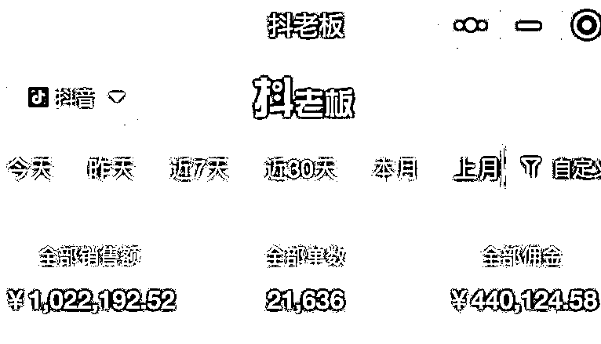
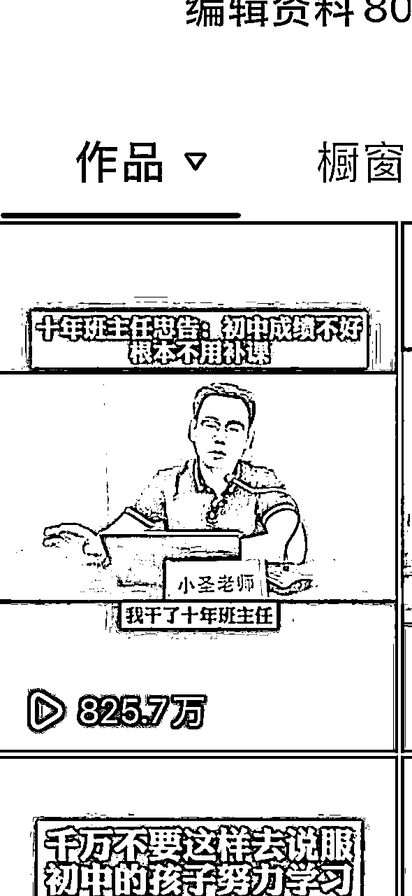
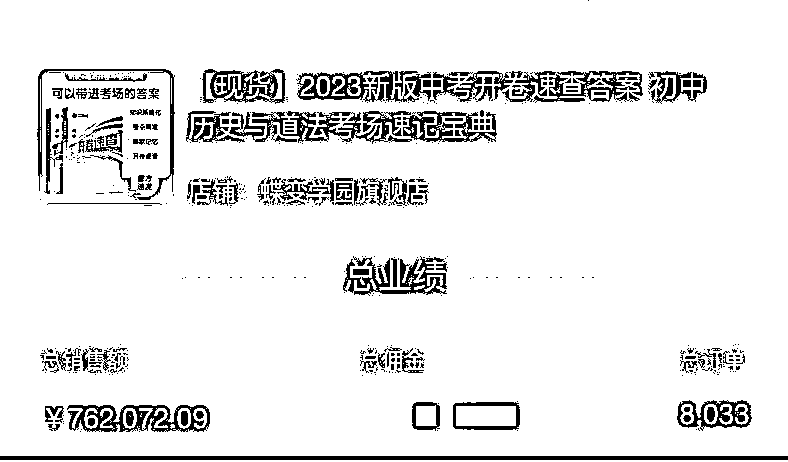

来源：https://q36ww6ducd.feishu.cn/docx/AjnOdF2dXoVe4Rx5cjAcfX4jn8e
嗨～大家好，我是小圣哥。
希望，这篇文章，对大家有所帮助，希望文章能给你带来启发，
毕竟赚钱前提，一定是认知的打开，
或者因为某个经验的分享，而大受启发，打破瓶颈！
这篇文章，会给大家分享，
我是如何通过矩阵+爆款的方式，
跑通教辅赛道，并且做到自然流量月gmv100万的，分享如下；
一、我为什么会抛弃，已跑通的商业IP矩阵账号，从而选择教辅赛道
二、为什么我会选择用矩阵的方式，来切入教育赛道？
三、我是如何通过矩阵+爆款的方式，把业绩做到自然流单月100万的gmv？

一、我为什么会抛弃，已跑通的商业IP矩阵账号，从而选择教辅赛道？
我做这个教辅赛道，也有一年了。从22年开始玩的。
在玩这个赛道之前，我早就已经跑通了商业IP的矩阵，10个号合计起来也有二三十万粉丝，那会儿，我记得好像是两三个月的时间就跑通了。
但是自己，手头上没有项目，所以不想割人韭菜，加上我互联网的经验沉淀太少了
那时候，想法比较单纯。
由于迫于团队生存的压力，所以我就转型到玩教辅赛道了。
那会儿，说转型就转型，把以前跑通的商业IP的账号，全都卖了。
然后就开始了教辅赛道的带货之旅。
我先说说，为啥要选择教辅赛道，很大的原因
还是因为这个赛道，迎合了我“既要”，“还要”的需求！
为什么？
在需求上分析，这个生意，肯定是可持续性的，毕竟咱们国内的家长
都是很注重教育的，很愿意为教育花钱。
同时它可以满足我短期内变现的需求，就是通过混剪的方式来起号
通过混剪的方式来变现，然后中后期，账号起来了，可以马上转真人IP
也就是真人口播。
这样是迎合了抖音的内容生态，毕竟混剪账号，还是有存在被抖音打压的风险的。
为了长期考虑，账号起来之后，中后期转型口播是最稳当的。
所以啊，前期你用真人口播来起号，太难了，太内卷了。除非你内容输出能力强，然后愿意花钱，
如此，你哪怕用真人口播来起号，也不会太难。
内容能力不强的，不建议前期起号直接用口播，用混剪和图文的方式。
然后我分享一下，我当初，我记得用了15天时间，通过真人口播的方式，起来了一个5万粉丝的账号
就是从第一个视频开始，都是用真人口播的。
分享如下；
1、真人口播起号策略选题的先后顺序
我去年9月份，起一个真人口播的账号，我的起号策略是先争议、后话题、然后才是输出干货。
为什么要这么做？
因为你争议型文案比较容易爆流量，当你爆了一条流量之后，你账号就有了近7天的流量权重，然后你接着再输出一些话题型文案，会更容易爆。
当爆了两三条视频之后，你在输出干货型文案，这个时候，你涨粉的效率会高很多。
我就是通过一条干货型视频，爆了825.7万播放量，涨了有四万多粉丝。
就是完成了上面的起号策略：先争议、中话题、后干货。

2、具体来说，先争议、中话题、后干货，到底是哪些文案？
争议的文案，你可以用绝对观点的文案，
比如，千万不要让孩子住校。
千万不要……
就是绝对站一边观点的文案。制造对立，让家长喷你，或者互相喷。
话题文案是啥？就是在深圳长大的孩子，就一定比老家的孩子优秀吗？
类似这些，也带有争议，但是他会让人有看下去的欲望，有想表达的欲望。
干货的话，这个就是很好理解了，就是那种教知识的。
二、为什么我会选择用矩阵的方式，来切入教育赛道？
其实用矩阵方式来切入教育赛道，本质上，还是为了抗衡，抖音流量池的不稳定。
毕竟我是以自然流量的打法为主的，所以多个账号，就是为了确保出单的效率会更高。
另外，你往深一点去思考，如果你有打算，深耕这个教育赛道，我们不能仅仅局限于视频端的变现。
就是当你在视频端，赚到了钱之后，你想有更大的发展
就应该去打通私域的变现，最后才是直播带货。
为什么最后才是直播带货，因为这个环节，所需要的人力、物力、财力、精力，消耗的比较多。
当自身基本盘，不够硬的时候，贸然切入，肯定走不长久
兴许能赚点钱，但是你投入各方面力量不多，你是无法持续赚到大钱的
与其因为准备不足，力量不足，，而造成收入上的不上不下，发展上的温水煮青蛙
还不如，花心思在视频端变现体系，还有私域端变现体系的搭建
当这些体系，搭建起来了，你就具备了资金优势和体系优势
利用这两个体系的优势，你不仅可以反哺人才优势和规模优势
还可以回过头来，去集中力量把直播带货做起来！
当这些体系都搭建起来了之后，你就可以搭建一个强大的产品体系
比如，所有渠道，都围绕课程，这种毛利润接近100%的产品去卖
在我的圈子里面，我认识的两个教育大佬，他们卖课程，每个月至少上千万销售额的体量
三、我是如何通过矩阵+爆款的方式，把业绩做到自然流单月100万的gmv？
其实大家也不用把矩阵想的过于复杂，它的本质是一样的。
就是，只要我们，在内容上定好，每天要发多少条视频
然后视频的选题是什么比例
比如，卖货文案3条，流量文案2条
或者你账号起来了，本身就有权重，你可以4条卖货文案，流量文案1条
一定要这样去每天更新内容，为什么？
如果你是想玩好自然流的话，每天更新流量视频，是为了拉流量用的
因为你账号自然流量活跃的话，你的挂车流量就不会太差
你这样去测品，就会比较容易测出单，转化率也比你，一条流量视频不发好。
而且，这样去分配自己每天更新的内容是什么
其实管理10个账号，管理20个账号，都是差不多的，
剩下的事情就是复制粘贴，比如一个选题，3个账号用，然后通过改编的手段
去给文案去除重复。
1、如何通过自然流，把业绩做到100万gmv？
接下来我说说，我4月份的时候，是如何通过矩阵+爆款的方式，做到100万gmv
核心还是要去追热点产品，但是这个热点产品，不是让你去追，那些已经爆了的品
如果你去追的话，你大概率打不赢别人。
热点产品之下，还是会有冷门产品的。
比如，以初中教辅为例
三大主科是热点产品，但是也有小四门啊
比如道法、历史、生物、地理
这些产品，都是属于中考要考，但是偏冷门的产品。
当初，我就是看中了一个品，就是蝶变的一款道法速查的品
这个产品，是可以开卷考试用的。
我当初一看，这个品，有卖点啊，毕竟你可以带进考场去抄答案
这个点，就已经让人很有冲动想要下单了
所以当时，我就测了这个品
当时一测吧，效果还挺不错的，好像第一天能走个1000多佣金
我看这个品，客单价高，随便出几单，佣金就几百上千了
而且当时也没有多少人打这个品
我就每天大量的，围绕这个品，去改编文案
我记得有一天晚上，改卖货文案，我用了大概8个小时，就围绕这个品
改编了24条卖货文案出来。
基本上都是大改40%-50%，而且是不重复的。
然后结果是什么？
就是连着爆了三四条上百万播放量的带货视频。

后面的日子里，我就每天改编文案，提供给团队
让他们持续去吃透这个品
我记得，当时的销量，刚开始有一半是我们打起来的
也就是说，这个品，我们打起来之后，一大片人跟着吃
幸好我们是第一批打起来的，不然后面跟风，估计只能喝口汤了
2什么是爆款？
我认为爆款的本质，是基于人性的。
不一定完全是热点的产品，就是爆款。
而是基于人性的基础上，然后使用策略，去打这个品，卖得出去才是爆款。
适合你自己，能卖得出去的，才是爆款。盲目跟风，只能跟在别人屁股后面喝汤。